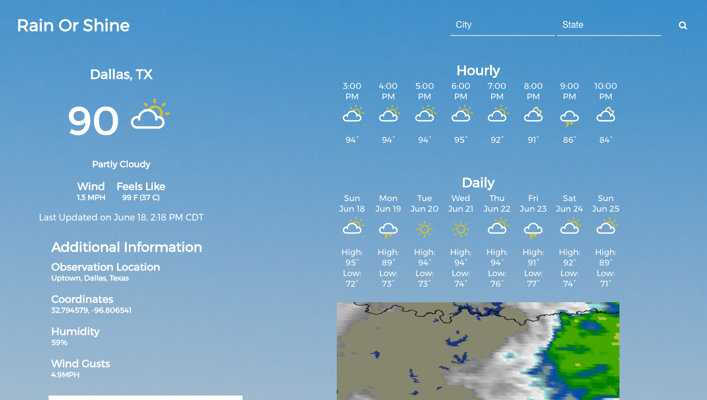
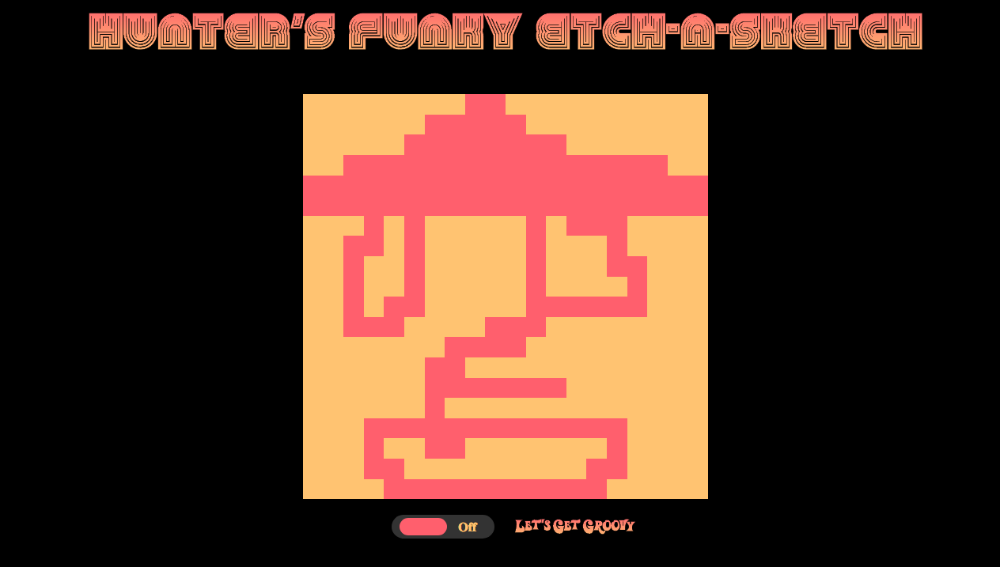
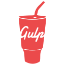

Projects I've Completed:
Rain or Shine
Rain Or Shine is a weather app that I built using AngularJS. The angular service calls the Weather Underground API for the data. I also implemented ui-router for the multiple views. All of the styling is custom. The original weather underground icons for displaying conditions have also been changed, and the icons in the project are custom as well.
Hunter's Funky Etch-a-Sketch
Hunter's Funky Etch-A-Sketch was the first project that I ever built. It is built using HTML, CSS, JavaScritp and JQuery. The idea for this project came from the online learning platform www.odinproject.com
testingTools that I like to use:


